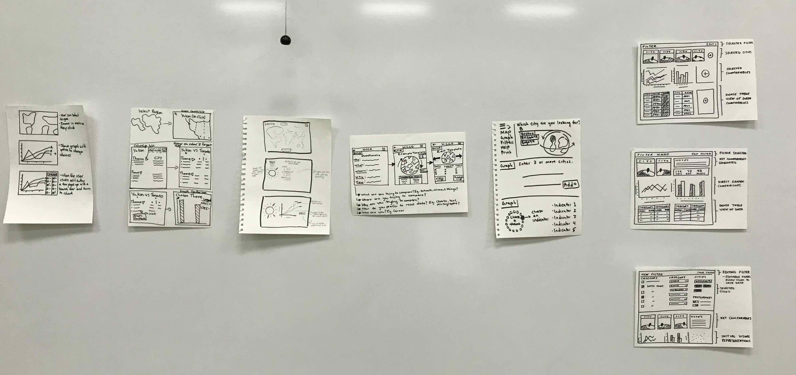
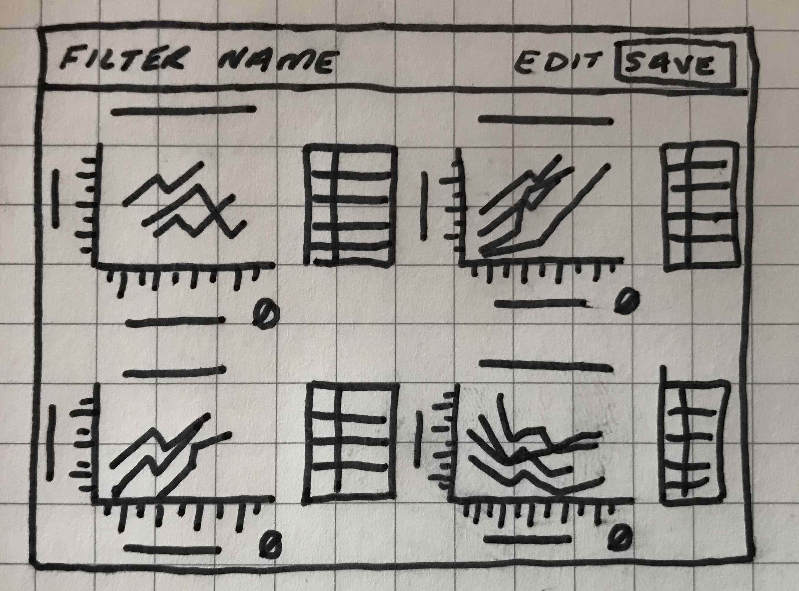
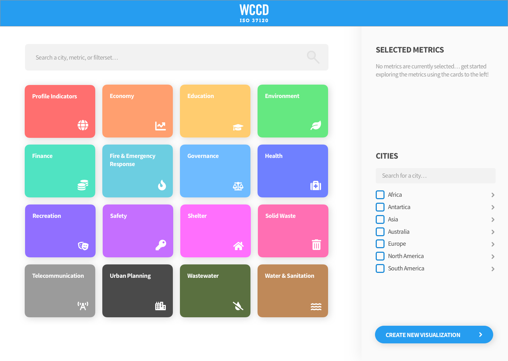

WORLD COUNCIL ON CITY DATA
Data Visualization at Scale
PROJECT DETAILS
| Developed | 2019 |
| Class | Design Thinking II (UX200) |
| Partners |
World Council on City Data Focus21 |
| Status | Presented to Client |
| Roles / Responsibilities | User Experience Designer User Interface Designer User Researcher Documentarian |
| Platforms | Web |
| Tools |
Sketch |
| Group Members |
Joel Schellenberger Nicole Chow Mikayla Ferraro Cameron Fong Kathy Nguyen Tyler Oakes Cedric Zheng |
| Full Report | Download PDF |

PROJECT DESCRIPTION
Initially our client presented us their concern of ‘scalability’ for managing and presenting the large data sets provided by the WCCD. Through diligent research and user validation we came to the conclusion that we would focus on the redesign of the website to ensure more effective usability by simplifying the appearance of the data to make it more engaging to work with, while removing certain barriers of entry from the current offering.
We began by conducting research through literature regarding best practices when designing sites for data visualization with large data sets. We also completed competitive analysis’ in order to analyze other well-designed websites with a focus on data visualization to capture the strengths and weaknesses of other websites of this nature. Following this, we conducted ideation workshops to generate as many ideas as we could. We conducted phases of individual and team idea generating, which were followed by heat mapping and selecting best elements of multiple designs to help guide us to one idea to be prototyped.
During our usability testing, we found some common and informative concerns that helped us shape the final design. Through our findings, we have been able to work through a redesign of the WCCD website that is visually appealing, usable, and scalable, as well as develop recommendations for the future of the site.
Key Takeaways from Research Phase
Things we learned from literature review:
- Focus on story, comparisons
- Understand limits of medium
- Effectively utilize grouping / ranking
- Takes 1/10 of a second to comprehend visual*
- Takes 250 milliseconds to attach meaning to a symbol*
Other important considerations:
- Know and respect your audience, how they process visual representations of information
- Clutter / confusion is a failure of interface design, not the complexity of data
- Need to incorporate richer, more accessible filter access for variety of use cases
Ideation Phase



WCCD Figure 1.4: Solution Sketches
For ideation, our team conducted a four step sketch consisting of gathering notes, gathering ideas [WCCD Figure 1.2], tweaking those ideas with the “Crazy 8s” [WCCD Figure 1.3], then doing a solution sketch [WCCD Figure 1.4]. Each member reviewed our previously done competitive analysis and research material (including websites similar to WCCDs and other big data visualization sites) in our notes before moving on to generating ideas. For twenty minutes during idea generation each member individually wrote down ideas incorporating those key points from our research findings, in the form of graphs, diagrams, or any other potential solutions that came to mind during the exercise they thought would be valuable to represent visually with a wireframe.
During our thirty minute solution sketch, we each drew our best ideas in the form of a storyboard consisting of 3 panels. After taping all of our finished solutions up on a board (similar to an “art museum”), we conducted a heat map where we placed dot stickers beside the parts of each solution sketch that we liked and wrote any questions or concerns on a sticky note that was then placed under the sketch.
Moving on, we went through a speed critique where we discussed each solution sketch to decide what should be included in the storyboard and prototype. We took the important parts from our solution sketches and weaved them into a storyboard [WCCD Figures 2.1-2.6], imagining how the user would find the website and then what it would look like for them when going through it. This helped us to identify gaps and priorities moving into our prototyping phase.


WCCD Figure 2.3: Dashboard Display (Fully Populated)

Initial Prototyping
Some of the things we wanted to address in our first prototyping exercise was the ability to save filters for continued use at a later time, view more data at once while selecting the filters with which to view the visualization (Figure 3.3), as well as a more engaging onboarding experience (Figure 3.2). We built out a web of over 50 artboards to make sure that our users felt as though the prototype was fully functional (pay no attention to the Sketch file behind the curtain, Figure 3.1).

A key priority was the need to incorporate richer, more accessible filter access. We drew out a number of solutions as to how that might work, eventually looking to maintain some familiarity and context of the current site by sorting the data into the subcategories laid out by ISO 37120; although our first draft of this selection process was a bit rudimentary, it served it’s functional purpose to be tested. As we considered how to sort this data, density was on all of our minds, and although we could do research and make assumptions about the level of density users would feel comfortable with, there was ultimately only one way to find out, and so off we went to test our prototype!
Testing
After the completion of low to high-fidelity prototype, we were able to begin user testing. Our methods of usability testing were interviews, contextual inquiries and A/B testing. We completed our user testing with five users; three Laurier Digital Media and Journalism students and two Laurier Faculty members. Due to the constraint of access to end users such as government and city planners, we found users that were closely linked to our end users in that they regularly use data visualization websites for school and work.

Key takeaways from our first round of testing:
- The “number” labeling system (aka the ISO section headers) weren’t effective ways of displaying metrics
- Navigation needed to be as simple as possible, and less clicks per task are preferable
- No users utilized the search feature in our testing
- Users valued bright, dense, captivating visuals, and would prefer to spend more time interacting and learning a platform over having dull visuals
Our initial plan for our solution involved adjusting the scatter-plot layout of the data as presented in the current site visualization. We heard overwhelmingly from the users that the way the current data was visualized was actually “refreshing,” despite it’s somewhat clear usability issues, and we elected in our final prototype to focus more on adjusting the usability issues we found through testing as opposed to the actual data visualizations. We recommended looking into the data visualizations in more depth in a further sprint.
Additional Feedback-Driven Prototyping

WCCD Figure 4.1: Redesigned Onboarding View
We adjusted our onboarding experience based on our testing feedback, trimming the fat off of our initial prototype and taking into account the needs and wants of our users.
Some things we brought over from the current site that worked well for our users in testing:
- Users have colours and icons work as identifiers for each of the ISO standard categories
- Users are able to see their selected metrics at (essentially) all times during their use of the site
- It takes two clicks (and some light scrolling) to add a metric from the main screen, down from about 4 in our first round of usability tests for our prototype
Some key changes we made from the current site to now:
- Users are presented a list of categories with all category and metric names available to them at once, as opposed to having to scroll over or click the icons to view the category and metric labels
- Users aren’t forced into using an arbitrary, circular layout of these categories
- Adding cities and metrics can be done via search functionality, as well as a clearly organized list of cities with multiple sorting options
- Tasteful drop-shadow effects on white (and slightly off white) backgrounds help users differentiate portions of the site, as well as indicating intractable elements


Some key points regarding the redesign as a whole (Figures 4.1-4.4):
- Users are presented with the ISO Standard metric labeling scheme on each individual metric, but in a much less dependent way than previous prototypes
- Users are presented a small icon and colour to maintain visual consistency across all instances of metrics and category cards on the site
- Users are able to scroll through the list of categories and list of metrics in individual columns (in opposition to full-page scrolling), maintaining a balance of visual density for usability and aesthetic considerations
- The selected metrics section live-updates in real time, displaying this key info regardless of how far down the rabbit hole a user may find themselves, and can be clicked to edit regardless of a users place on the site
- The category cards stay the same size and shape regardless of your place on the site, reinforcing a consistent visual language
- City labels can be turned off, and are all sorted to the right by default when viewing a visualization (to avoid the mess that the site currently has in place when it comes to labeling data on the scatter-plot)
Final Recommendations / Next Steps
- Continuing to explore the ways complex data gets represented is a key to the long-term sustainability of the site. The people we tested with generally understood the language of the city-based scatter- plot, but problems like labeling and density still exist in the current visualization. While we initially planned to tackle that challenge, our understanding of our space quickly shifted to being able to access information (selecting filters) once we realized that was a key roadblock that came before the visualization in the process. In the future, it would be worth exploring the ways to display information in a way that works in more dense situations.
- As mentioned previously (during the Initial Prototyping stage) we attempted to sort out an option where a user was able to log in and save a list of filters for later reference, but simplified our prototype for the sake of testing our core functional changes to the systems usability as opposed to this change. Moving forward, it may be worth re-visiting the ability to save and select visualizations from a user profile or list.
I would personally like to thank Focus21 and the World Council for City Data for being gracious partners, and for affording our group the opportunity to work on a project that challenged us as students and designers in new and exciting ways.
Our group would also like to thank Seul Lee, Filip Jadczak, and Abby Goodrum for their continued guidance and support throughout the duration of the project, as well as our testers from the Digital Media and Journalism program at Laurier Brantford for being kind enough to let us test our ideas on them.
We wish Focus21 and the WCCD all the best moving forward with the project!


{kind=link}
{kind=link}
{kind=link}
{kind=link}